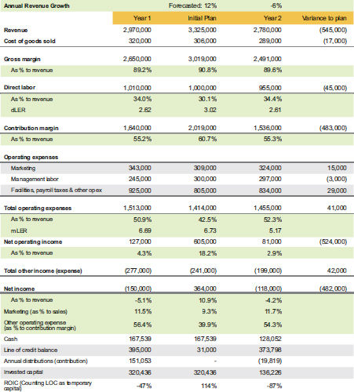

Table 8.2
ATSi year 2 variance to plan

Table 8.2 proves that business is a lot harder than putting numbers on a spreadsheet! Notice the following:
- Although ATSi had the greatest of intentions, their annual revenue growth goal did not materialize.
- The company realized that some customers and service offerings were not profitable. They started trimming underperforming labor and cutting unprofitable customers, and they dropped some services that were losing money late in the year when they realized they did not have the right people in the right seats. You will see more of the labor trimming effect in year 3.
- While they made some modest improvement in operating expenses, they realized that you typically cannot cut enough costs to become profitable; you have to focus on not being wasteful.
ATSi was expecting to make a profit in year 2, but instead they failed to implement the changes needed and had to fund a loss instead of having profit by following a three-pronged approach:
- They squeezed their cash down by $40,000.
- They used that $40,000 to pay down their line of credit so the bank would not think the loan was uncollectible (because the bank would worry, since you cannot repay a loan when you have losses).
- Instead of taking distributions, the owner made a capital contribution of $19,819.
After reflecting on year 2, ATSi learned the following:
- A dLER of $3.25 would get them to breakeven, and $3.50 would get them to 10%.
- Their marketing spend may have missed the mark, but they would give it one more year at the same level and try to track more so they could correlate the results of their spending by channel.
- They were out of funding resources, so any cash shortfall would have to come from personal funds or borrowing from the owner personally.
- It would have been better to get profitable in year 1 rather than trying to grow out of a hole since they had limited access to funding for their launch capital.